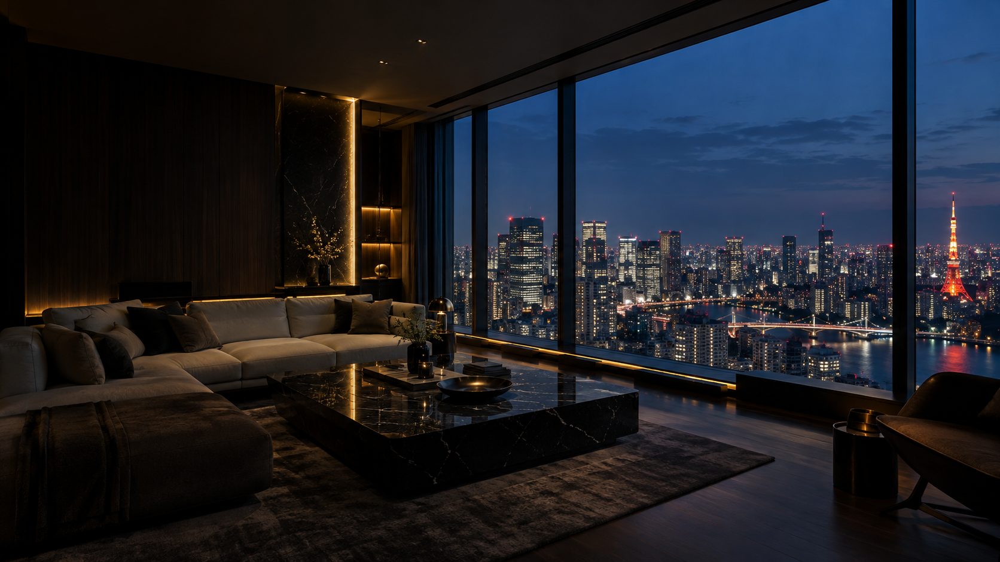

忙しい日の終わりに、どこで、どう過ごすか。ソファに座ってひと息つく時間も、本を開く時間も、その日の自分を取り戻す時間になる。インテリアへの投資は、毎日の過ごし方を選び直すことでもあります。
01
まず、帰宅後の自分を思い描く。
部屋づくりを家具の検索から始める前に、帰宅してからの時間を考えてみる。食事をする、音楽を聴く、少し本を読む。ただ何もせず過ごす。その場面に必要な居場所が、部屋の中にあるでしょうか。
目指したいのは、写真の中だけで美しい部屋ではなく、日々、自然に使いたくなる部屋。いつもの動きと過ごし方が、家具選びや配置の出発点になります。
02
窓辺の光を、カーテンで整える。
大きな窓は、眺望だけでなく部屋の印象も左右します。昼に取り込みたい光、夜に気になる視線、窓の向こうの景色。過ごす時間によって、窓まわりに求める役割は変わります。
カーテンは最後に色だけを合わせるものではありません。生地の表情や透け感、家具とのつながりまで一緒に考えることで、空間全体の落ち着きが見えてきます。
03
照明で、夜の居場所をつくる。
部屋全体を一様に明るくする以外にも、灯りの選び方はあります。テーブルの上、ソファの横、部屋の奥。光を置く場所を考えると、夜に過ごしたい場所が定まってきます。
食事や読書に必要な明るさと、くつろぐための雰囲気。両方を大切にしながら、ペンダントやフロアライトを組み合わせます。家具と照明を同時に考えることが、使いやすい配置にもつながります。
04
自分に合う空間を、ひとつの提案に。
ソファだけ、カーテンだけ、照明だけ。それぞれを気に入って選んでも、並べると思い描いた部屋にならないことがあります。サイズ・色・素材・光を、部屋全体で考えることが大切です。
nicomade menは、家具・カーテン・照明・レイアウトを通して、自分らしく過ごせる空間を提案します。理想の部屋の写真だけでなく、今の暮らしで気になることからお聞かせください。